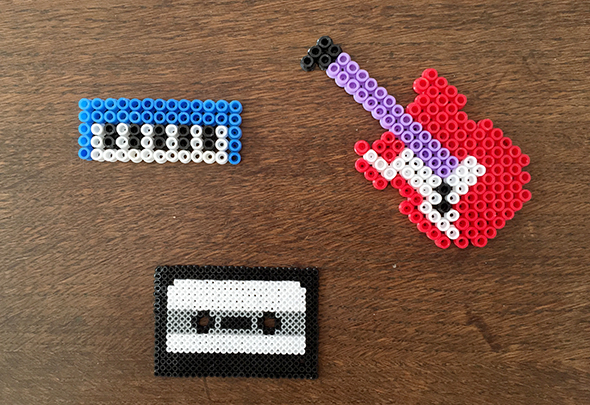
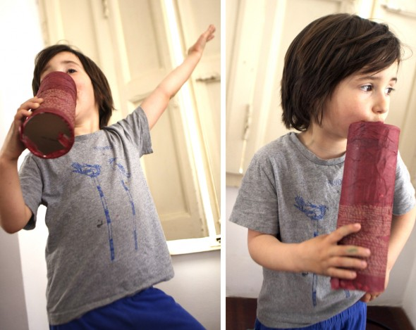

Spielzeug
Regenstab
Steche der Spirale entlang Löcher in eine Papprolle ( Küchenpapier). Dann führe Zahnstocher ein, bis sie auf der anderen Seite wieder rauskommen und fixiere sie mit…
Weiterlesen →
Kategorie
Steche der Spirale entlang Löcher in eine Papprolle ( Küchenpapier). Dann führe Zahnstocher ein, bis sie auf der anderen Seite wieder rauskommen und fixiere sie mit…
Weiterlesen →

Hier ein neues Instrument aus einer Dose und Flaschendeckel. Es ist ziemlich laut.
Weiterlesen →
Mikrophone Wir habe ein bisschen das Äußere einer Pringels- Verpackung verändert, jetzt ist sie ein Mikrophon.
Weiterlesen →
Schilf Instrument: Dank Lluna haben wir dieses wundervolle Instrument kennengelernt.
Weiterlesen →
Rassel: Wir haben zwei Pappteller durch einen genähten Faden verbunden. Im Innern befinden sich Kichererbsen. Hannah und Noah haben dieses Instrument mit Aufklebern dekoriert, aber man…
Weiterlesen →
Yoghurt Trommel: funktioniert mit dem gleichen System wie die Trommeln meines Posts: tambor 01. Der Resonanzkörper ist in diesem Fall ein Yoghurtbecher, umspannt mit einem Gummiband.…
Weiterlesen →

Diese Trommel ist aus einer Dose. Der Faden ist ein Gummiband. Wenn man die Perle nach oben zieht und dann wieder los lässt macht sie ein…
Weiterlesen →